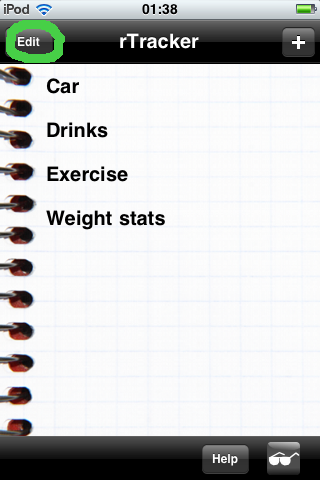
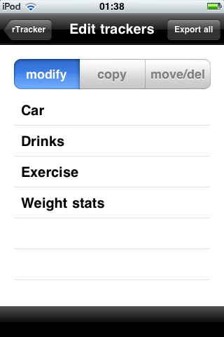
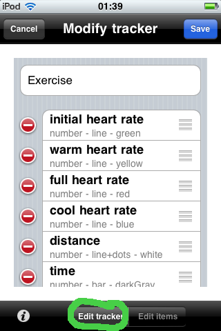
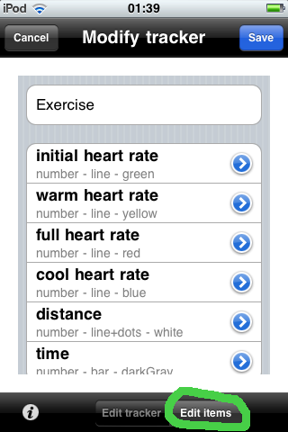
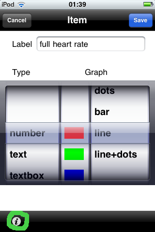

| Tap the 'edit' button in the top left
corner of the front screen. This button is only available if at least one tracker is shown. |
 |
|
From this page one may select individual trackers to modify, copy (clone) trackers, and re-order or delete trackers from the first view.
To change a specific tracker, tap it with the 'modify' choice highlighted. |
 |
|
A tracker consists of a name and a set of related items (or values). In the 'Edit tracker'
mode on this page, the items can be rearranged or deleted. Add more items with the '+' at the bottom of the list (What data types are available?) |
 |
| With 'Edit items' selected, tapping the blue detail arrow will present the page for configuring any specific item. |  |
|
On this page, just as with adding a tracker, an item's data type and main graph characteristics can be set.
The 'i' button in the lower left leads to options specific for each data type. Be sure to save your changes all the way back out! |
 |